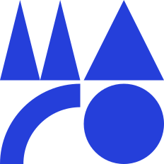

Inherit color
Use icons through masks, inline SVG, or a component so currentColor follows state automatically.
maro.al · Solid icon family
A normalized 24×24 library for product navigation, actions, feedback, account flows, and media tools. Every icon inherits currentColor.
Library
Search by English or Albanian aliases. Select a card to copy its canonical path.

Try another name, alias, or category.
Implementation
Use icons through masks, inline SVG, or a component so currentColor follows state automatically.
Use the native 24×24 viewBox. Default visible size is 20px; navigation may use 24px.
Unknown icon-only actions need an accessible name and tooltip. Touch targets stay at least 44px.
Do not add outline, emoji, or another family beside these solid forms.
<img src="/icons/save.svg" alt="" aria-hidden="true" />
/* For semantic color control, use as a mask */
.icon {
width: 20px;
height: 20px;
background: currentColor;
mask: var(--icon) center / contain no-repeat;
}